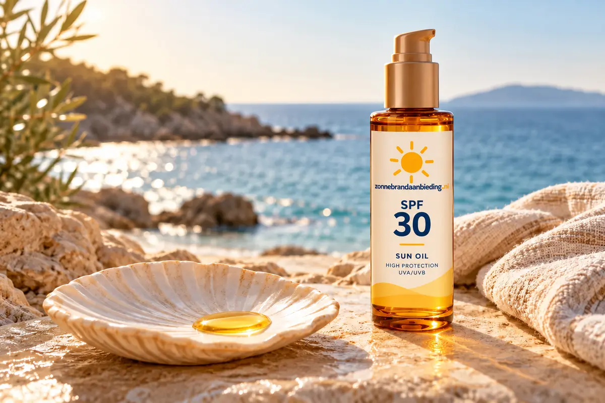

Celenes - OlieBekijk hier
Celenes Herbal Tanning Oil Alle Huidtypes SPF 15 200 ml
€ 15,09per stuk
€ 7,54 per 100 ml
Van € 16,45 voor € 15,09
Niet iedere zonneolie beschermt hetzelfde. Kijk altijd naar SPF, UVA-bescherming en of het product daadwerkelijk als zonnebrandmiddel bedoeld is.

Het woord zonneolie wordt gebruikt voor verschillende soorten producten. Sommige zijn bedoeld voor bescherming, andere vooral voor huidverzorging of bruining. Controleer daarom de beschermingsfactor en gebruiksaanwijzing. Ook olie moet royaal en gelijkmatig worden aangebracht.
€ 7,54 per 100 ml
Van € 16,45 voor € 15,09

€ 10,69 per 100 ml
2 × 200 ml voor € 42,75

€ 25,79 per 100 ml
Van € 27,45 voor € 25,79

€ 41,30 per 100 ml
Van € 13,19 voor € 12,39

€ 5,98 per 100 ml
€ 7,26 per 100 ml
3 × 200 ml voor € 43,53
€ 7,26 per 100 ml
2 × 200 ml voor € 29,02

€ 10,68 per 100 ml

€ 11,72 per 100 ml
12 × 75 ml voor € 105,49

€ 12,17 per 100 ml
6 × 150 ml voor € 109,49

€ 12,30 per 100 ml
6 × 150 ml voor € 110,66
€ 12,66 per 100 ml
3 × 150 ml voor € 56,99
Vergelijk binnen dezelfde productsoort op SPF, inhoud en prijs per 100 ml. Let daarnaast op verpakking en doseerwijze: een sprayolie werkt anders dan een fles die je in de hand schenkt.
Bescherming tegen verbranding en huidschade moet leidend zijn. Gebruik minimaal SPF 30 met UVA-bescherming, ongeacht de productvorm.
Dat verschilt per product. Controleer de verpakking en smeer na zwemmen of afdrogen altijd opnieuw.
Algemene beschermingsadviezen: KWF.